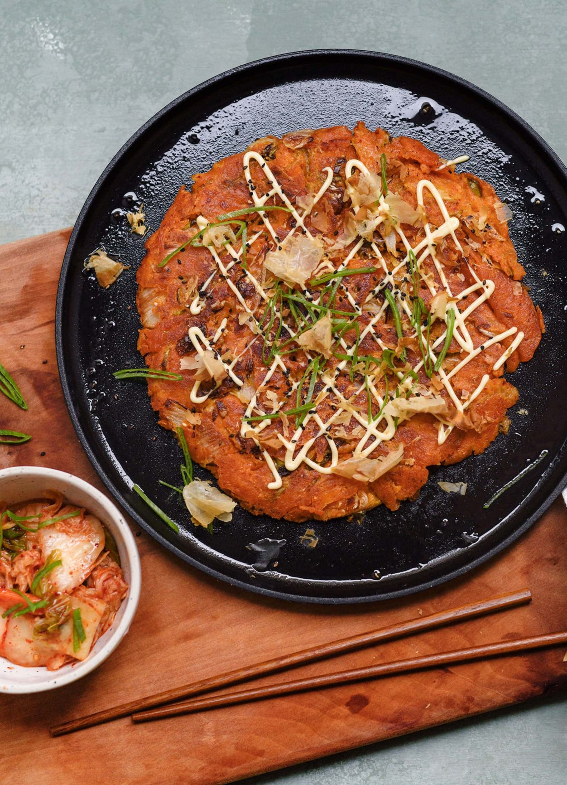
Kimchi Pancake mit BonitoflockenAsiatische-Rezepte
Laktosefrei
Fusion
Gemüse
Koreanisch
Party
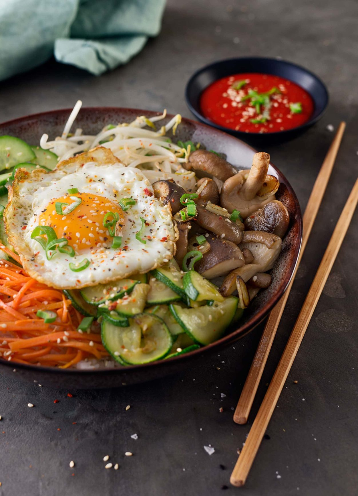
Bibimbap mit Sushireis, Shiitake und Gochujang-Sauce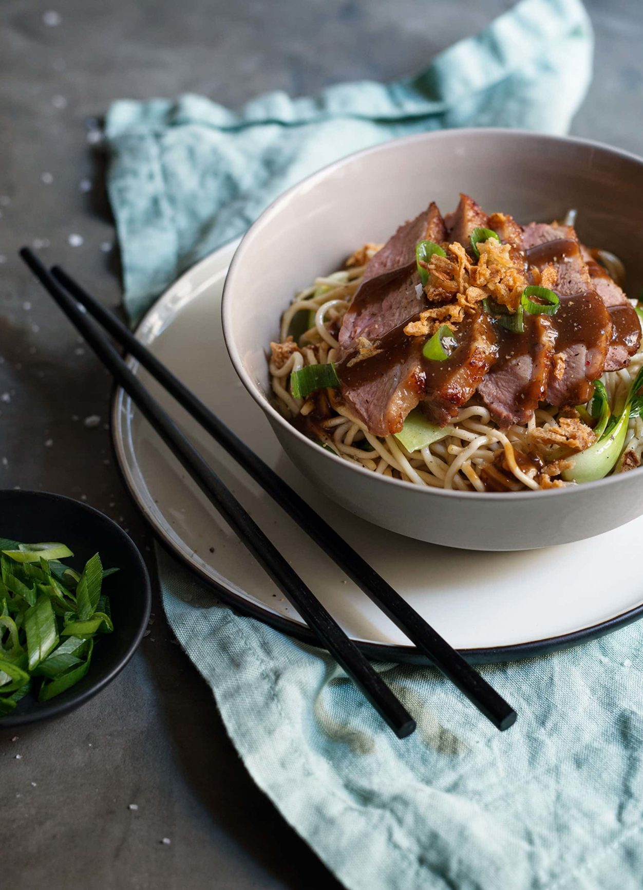
Crispy Duck mit Miso-Pflaumen-Sauce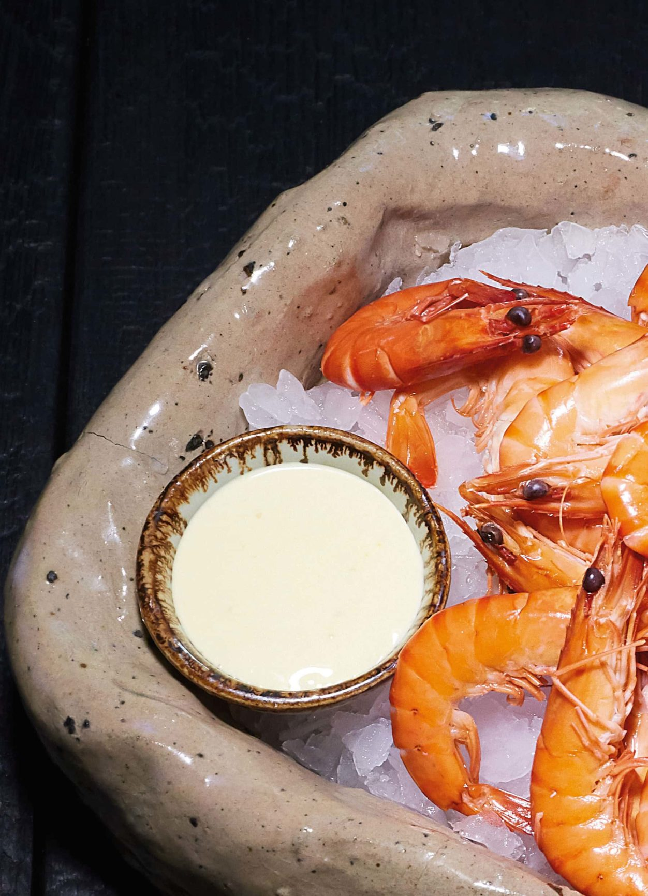
Mayonnaise by MochiZu Gast in der Brauküche 35
Die Neugier auf Bier ist groß. Und in Schalladorf hat sich was ganz Neues zusammengebraut.
Zur Story · 10/05/2018
· 10/05/2018Sonja Priller
Food-Fotografin, Ästhetin, Denkerin, Hobby-Winzerin & unverzichtbares Mitglied des feinkoch-Teams
Zur StorySchnelle Küche
Sommer
Schnelle Küche
Laktosefrei
Gesund
Frühling
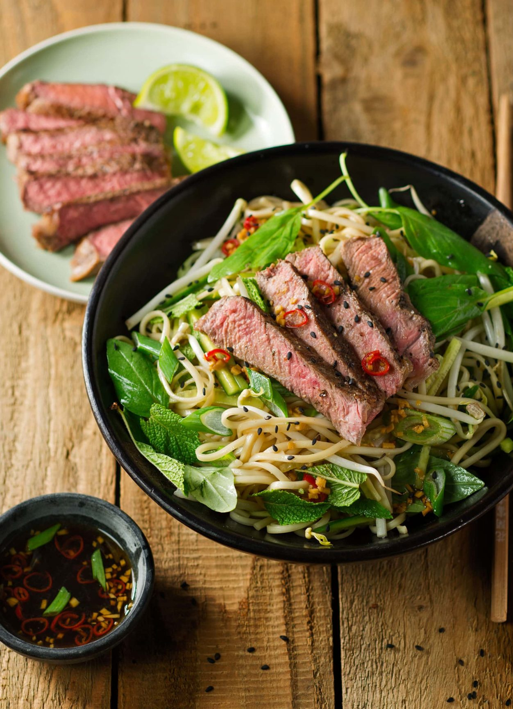
Kimchi Pancake mit Bonitoflocken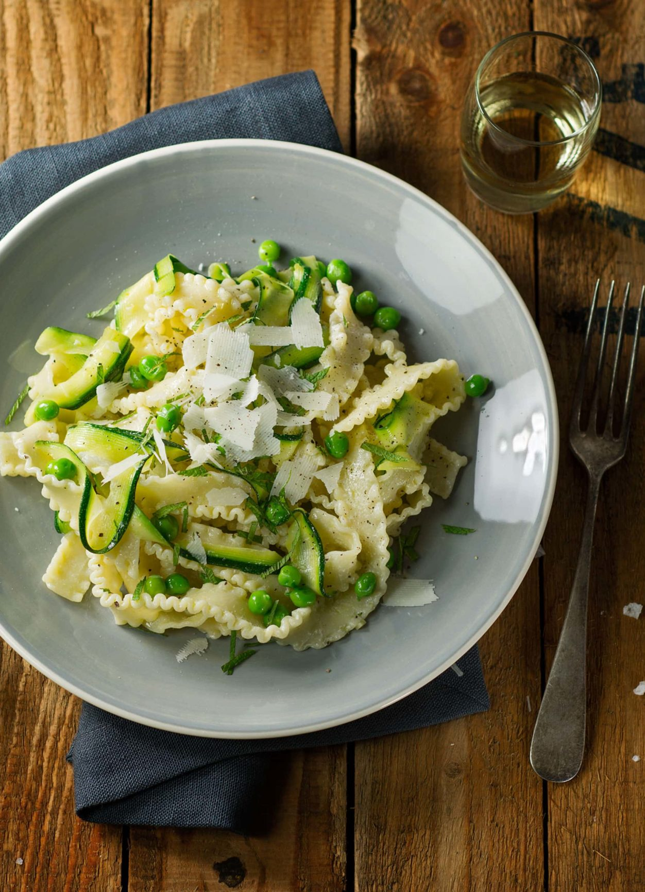
Bibimbap mit Sushireis, Shiitake und Gochujang-Sauce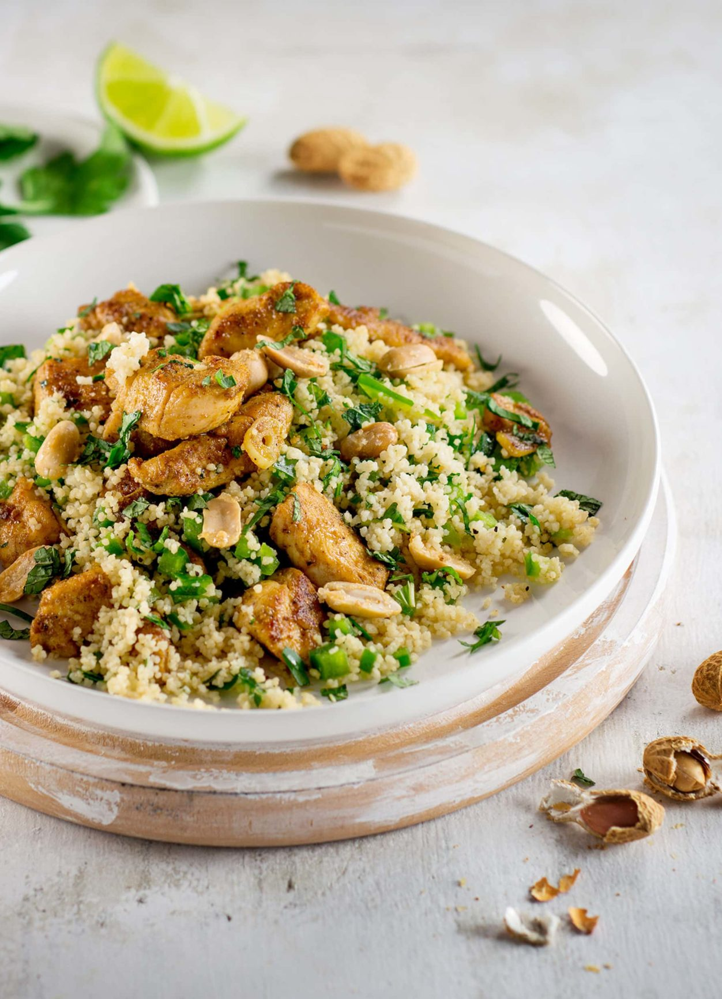
Crispy Duck mit Miso-Pflaumen-Sauce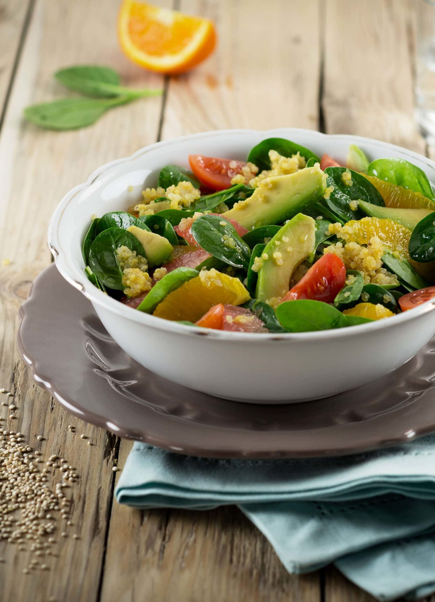
Mayonnaise by MochiDessert Rezepte
Süß
Party
Sommer
Obst
Süßspeise
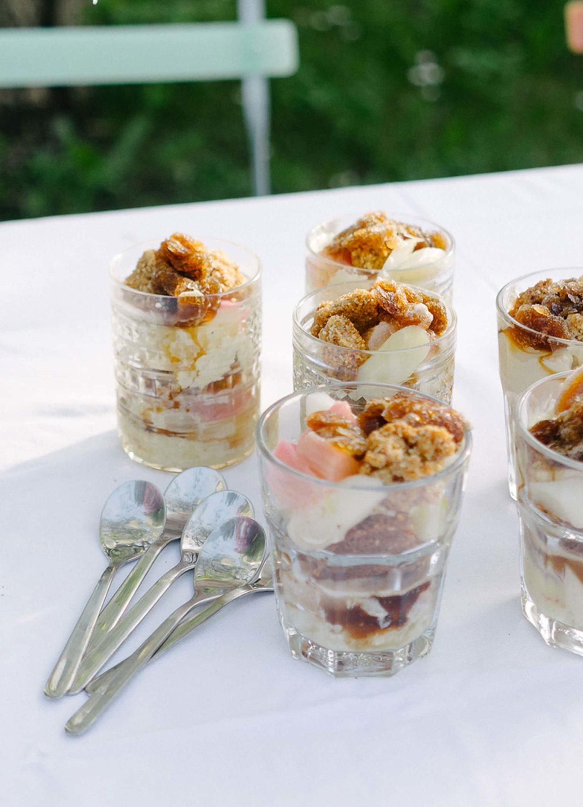
Vanille-Spargel, Bier-Granita & Mandel-Crumble an Vanille-Eis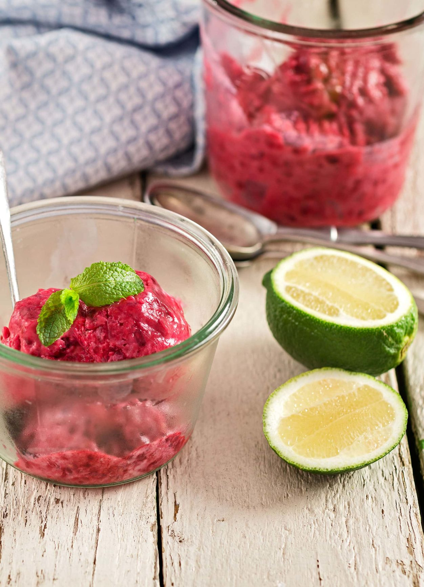
Bibimbap mit Sushireis, Shiitake und Gochujang-Sauce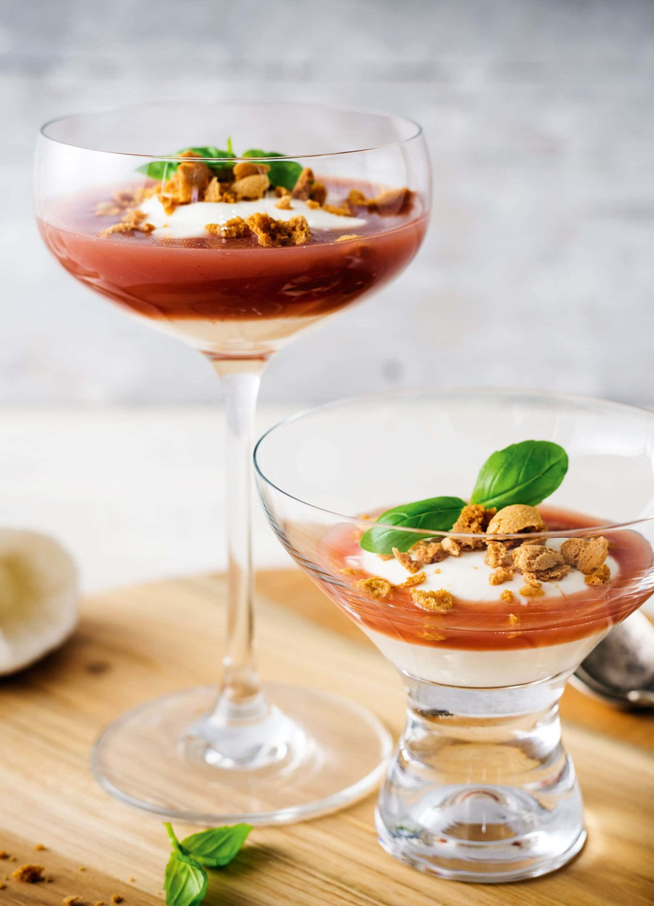
Crispy Duck mit Miso-Pflaumen-Sauce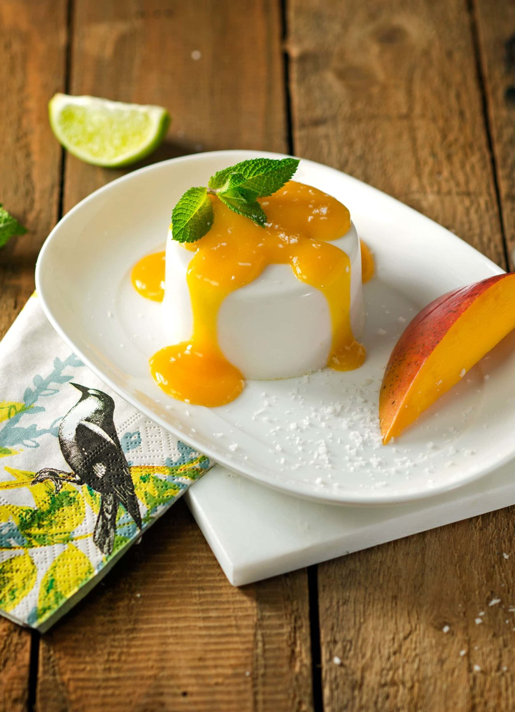
Mayonnaise by Mochi